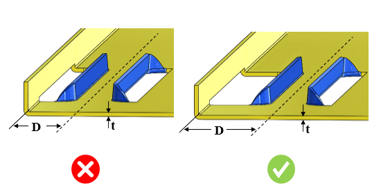

カードガイドフォームの中心から曲げ部までの最小距離と板厚との比は、ユーザーが指定した値以上である必要があります。
カードガイドフォームとは、スライドするカードを案内するために板金表面に設けられる形状です。
カードガイドフォームは、板金設計における成形プロセスの一部です。設計時には、せん断、変形、その他の金型上の問題を防ぐために、カードガイドフォームと曲げ部との間に最小距離を確保する必要があります。そのため、設計者はカードガイドフォームと曲げ部との間に十分な距離を確保することが推奨されます。
一般的なガイドラインとして、カードガイドフォームの中心から曲げ部までの最小距離と板厚との比は、板厚の5倍以上であることが推奨されます。
DFMProはカードガイドフォームと曲げ部を識別し、カードガイド中心から曲げ部の内側半径までの距離と板厚との比を算出します。この比は、設定された比率の値と照合されます。
ユーザーは、デフォルトで設定されている比率を編集することができます。
ルールUIでは、材料の一覧が Map Material から読み込まれ、ユーザーは材料およびその値を設定することができます。
材料とその値を設定した後、ユーザーは Ctrl+M コマンドを使用して、ルールUI内で材料グループおよび材質グレードとともに、設定済み材料の一覧をフィルタ表示することができます。同じキー（Ctrl+M）を使用してフィルタをリセットすることもできます。

ここでは、
D = カードガイド中心から曲げ部までの距離
t = 板厚